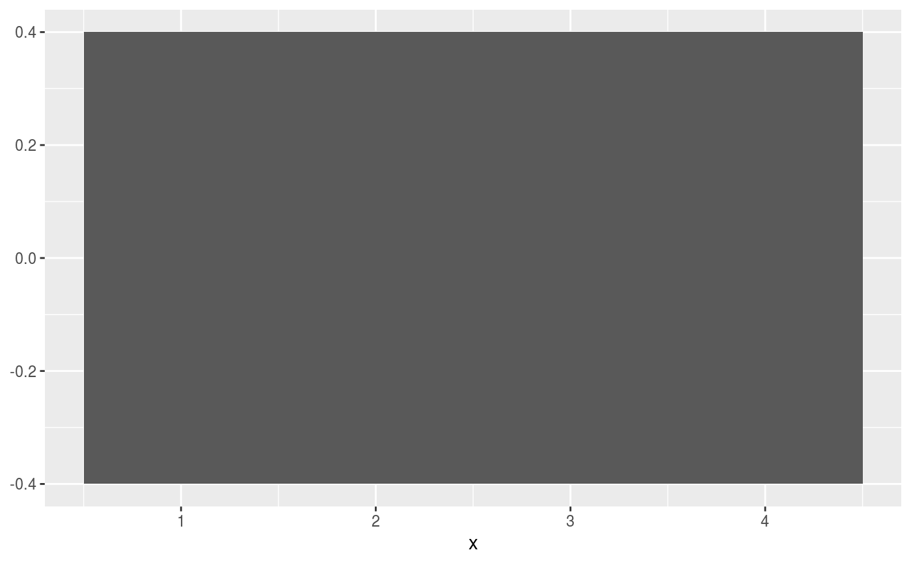

Alternative parameterisation of rectangles which can take a
Ranges-class, such as IRanges or GRanges
as x or y argument.
geom_range( mapping = NULL, data = NULL, stat = "identity", position = "identity", ..., linejoin = "mitre", na.rm = FALSE, show.legend = NA, inherit.aes = TRUE )
| mapping | Set of aesthetic mappings created by |
|---|---|
| data | The data to be displayed in this layer. There are three options: If A A |
| stat | The statistical transformation to use on the data for this layer, as a string. |
| position | Position adjustment, either as a string, or the result of a call to a position adjustment function. |
| ... | Other arguments passed on to |
| linejoin | Line join style (round, mitre, bevel). |
| na.rm | If |
| show.legend | logical. Should this layer be included in the legends?
|
| inherit.aes | If |
A Layer ggproto object.
If the x position aesthetic is given while y is not,
and vice versa, the default behaviour is to center the aesthetic that is not
provided around zero with a height/width of 0.8. If the position aesthetic is
numeric, it is expected that also the (x|y)end aesthetic is
provided.
geom_range understands the following
aesthetics (required aesthetics are in bold, optional in italic).
x
y
xend (if data is numeric)
yend (if data is numeric)
alpha
colour
fill
group
linetype
size
